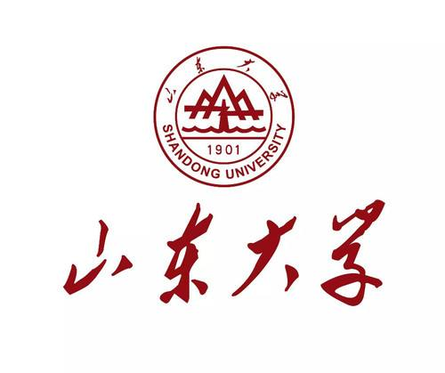

调查生成式人工智能对山东大学青岛校区本科生创新能力影响的问卷
0%
一、基本信息
您的生理性别: [单选题] *
男性
女性
请选择您的生理性别。
当前在读阶段: [单选题] *
大一本科生
大二本科生
大三本科生
大四本科生
大五本科生
请选择您的当前在读阶段。
所属学科门类: [单选题] *
理科大类
人文社科
工科大类
艺术大类
交叉学科
请选择您的所属学科门类。
下一页
二、AI使用行为特征
您是否使用过生成式人工智能工具（如ChatGPT、MidJourney、文心一言等）? [单选题] *
否
是
请选择您是否使用过生成式人工智能工具。
请评估您的AI工具使用熟练度: [单选题] *
零经验（仅会简单提问）
入门级（会简单的prompt模板）
基础级（熟悉大语言模型的提问方式，会调教其回答）
熟练级（掌握不同类型的ai工具来生成aigc适应多种任务需求）
大师级（掌握多种工具的高级功能，会深度使用如调用大模型api等）
请评估您的AI工具使用熟练度。
上一页
下一页
三、创造力评估
（一）自主性维度（IM-A）
课程学习中，你更倾向于: [单选题] *
只学教学大纲上有的内容
选择性拓展自己感兴趣或认为重要而大纲没有的内容
充分构建自己的知识体系，无论那部分知识感不感兴趣、与考试有无关系
请选择您的课程学习倾向。
当你在个人课程设计中遇到选题分歧时，更倾向于： [单选题] *
完全按导师建议执行
参考他人方案后调整
坚持独立构思的方向
请选择您遇到选题分歧时的倾向。
在完成课堂任务时突破课堂作业要求的频率 [单选题] *
从未
五次中差不多有一次
五次中差不多有两次
五次中会有三次
五次中有四次
每次都会
请选择您突破课堂作业要求的频率。
上一页
下一页
三、创造力评估
（二）能力感维度
小组作业遇到瓶颈，你更倾向于 [单选题] *
等待 Leader或其他人站出来
独立查阅资料默默构思解决方案
站出来组织大家一起头脑风暴
请选择您小组作业遇到瓶颈时的倾向。
当个人创新项目超出当前能力范围时，你的选择： [单选题] *
放弃尝试
开始划水摆烂
寻求他人帮助，自身参与有限、搭便车
寻求他人帮助，自身也积极思考
主动学习并主导解决问题
请选择您个人创新项目超出当前能力范围时的选择。
上一页
下一页
三、创造力评估
（三）关联性维度
创新团队中，你最看重的人际关系是： [单选题] *
权威认可
平等协作
情感支持
请选择您创新团队中最看重的人际关系。
在创新项目中，你认为团队成员最需要的是： [单选题] *
明确的任务分工
互相学习的机会
彼此的鼓励与信任
请选择您认为创新项目团队成员最需要的是。
如果你的创意被团队质疑，你会： [单选题] *
放弃创意并跟随主流意见
坚持己见并证明可行性
倾听他人意见并优化创意
请选择如果您的创意被团队质疑，您会怎么做。
上一页
下一页
三、创造力评估
（四）个体特质维度
课后自主探索专业相关前沿领域的频率： [单选题] *
从未
每个学期 1-2 次
每月 1-2 次
每周 1 次
差不多天天关注
请选择您课后自主探索专业相关前沿领域的频率。
面对无明确指导和ddl的创新任务时，你的启动速度 [单选题] *
等到再不做就要来不及时再做
等待指示或ddl出来后行动
观察他人后行动
主动制定计划
尽力立即投入尝试
请选择您面对无明确指导和ddl的创新任务时的启动速度。
对主流学术观点的态度： [单选题] *
完全接受
偶尔质疑，但不予深究
偶尔质疑，且会通过各种方式解惑
每次听到新的观点都会反思和质疑
敢于主动挑战并谨慎且有理地提出新观点
请选择您对主流学术观点的态度。
自主探索非专业领域知识的频率 [单选题] *
从不探索
偶尔浏览
定期学习
深入研究
形成跨领域知识体系
请选择您自主探索非专业领域知识的频率。
遇到无法解释的现象时，你的反应： [单选题] *
忽略不计、不予理会
随口询问但不予深究
详细向他人询问
搜集各种资料信息去解释
设计实验验证
请选择您遇到无法解释的现象时的反应。
你认为自己是一个： [单选题] *
想象力贫瘠的人
想象力一般的人
想象力丰富的人
请选择您认为自己是一个什么样的人。
上一页
下一页
三、创造力评估
（五）思维过程维度
面对复杂问题时，你的思考习惯： [单选题] *
按部就班分析
先发散思考后收敛于题目
直接跳跃到解决方案
请选择您面对复杂问题时的思考习惯。
当原有方案被否定时，你转向新方案的速度： [单选题] *
无法从原先思路中调整出来
需要他人帮助才能有新想法
可以正常构思新方案，但需要一段时间
可以迅速转向新方案
每次面对一个课题都有多种思路，可迅速拿出其他备选方案
请选择当原有方案被否定时，您转向新方案的速度。
上一页
下一页
三、创造力评估
（六）成果评价维度
近两年取得的创造性成果（多选）: [多选题] *
发表学术论文
获得专利/软件著作权
学科竞赛获奖
艺术创作参展/发表
创新项目立项
商业转化成果
其他
请选择您近两年取得的创造性成果。
上一页
下一页
三、创造力评估
（七）环境维度
你清楚你所在院校有哪些创新支持方式吗（如实验室，导师指导，孵化基金，跨学科平台等） [单选题] *
不清楚，一个都不知道
好像听说过一两个
略有了解，知道某几个的具体内容
时刻关注，了解很多
了如指掌，几乎每个自己感兴趣的都清楚
请选择您是否清楚您所在院校有哪些创新支持方式。
你对这些创新资源的使用频率： [单选题] *
没用过
偶尔被动地使用
积极主动地调用
请选择您对这些创新资源的使用频率。
成长过程中，家庭最常给予的支持： [单选题] *
物质保障
情感鼓励
自主决策权
请选择您成长过程中，家庭最常给予的支持。
上一页
提交